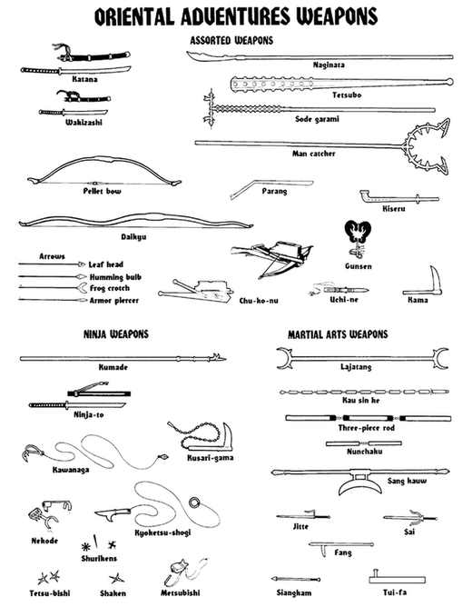

东方武器图版

图版分为“各式武器”“忍者武器”和“武术武器”三组。标注对照：Katana（武士刀）、Wakizashi（胁差）、Naginata（薙刀）、Tetsubo（铁棒）、Sode garami（袖缠）、Man catcher（捕人器）、Parang（砍刀）、Kiseru（烟管）、Gunsen（军扇）、Pellet bow（弹丸弓）、Daikyu（大弓）、Arrows（箭），其中 Leaf head（叶头箭）、Humming bulb（鸣哨箭）、Frog crotch（蛙叉箭）、Armor piercer（破甲箭），Chu-ko-nu（诸葛连弩）、Uchi-ne（小标枪）、Kama（镰）；Kumade（攀爬耙）、Ninja-to（忍者刀）、Kawanaga（绳钩）、Kusari-gama（镰锁）、Nekode（攀爬爪）、Kyoketsu-shogi（双刃绳）、Shurikens（手里剑）、Tetsu-bishi（铁菱）、Shaken（投掷飞镖）、Metsubishi（烟粉）；Lajatang（薙杖）、Kau sin ke（链节鞭）、Three-piece rod（三节棍）、Nunchaku（双节棍）、Sang kauw（三股钩）、Jitte（十手）、Sai（叉棍）、Fang（钩棒）、Siangkam（双叉）、Tui-fa（拐）。
本节内容